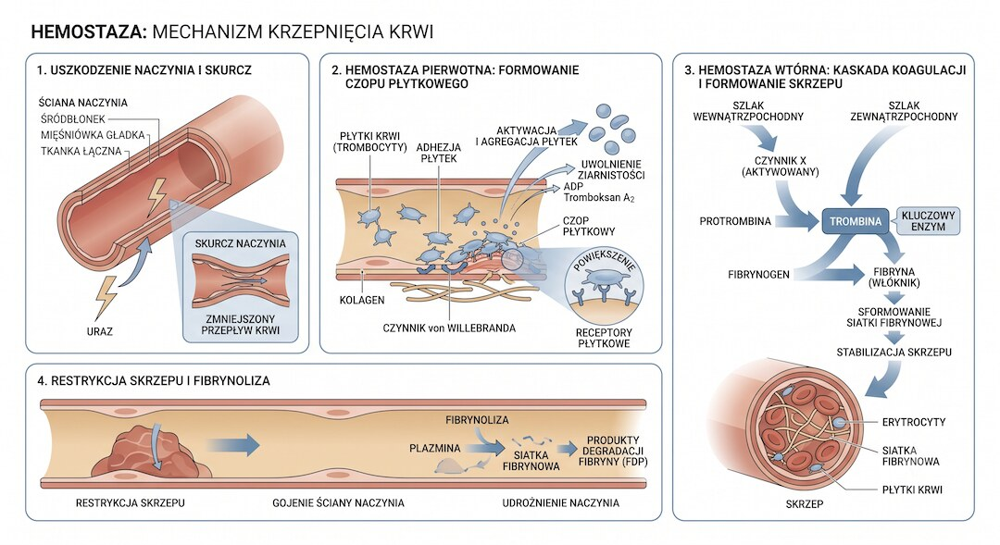
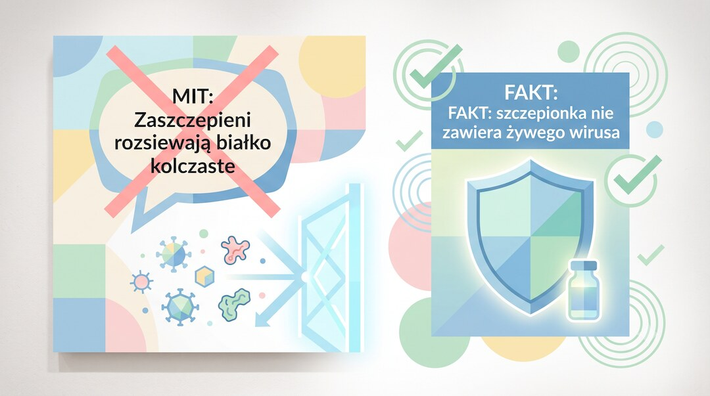

Wokół szczepionek na COVID-19 narosło mnóstwo skrótów myślowych i plotek z internetu, ale też kilka realnych, choć często wyolbrzymionych obaw. Zamiast emocji sprawdziliśmy, co pokazują systematyczne przeglądy badań, dane agencji lekowych i publikacje w recenzowanych czasopismach. Bez straszenia i bez bagatelizowania – po prostu fakty.
Szybka odpowiedź
Jeśli po szczepieniu COVID masz tylko ból ręki, zmęczenie, gorączkę lub bóle mięśni przez 1-3 dni, to zwykle jest typowa reakcja odpornościowa, ale ból w klatce, duszność, silny ból głowy, zaburzenia widzenia albo objawy neurologiczne wymagają pilnej konsultacji, bo rzadkie powikłania, jak myocarditis lub TTS, trzeba szybko wykluczyć.
Kluczowe wnioski
- Zapalenie mięśnia sercowego po szczepionkach mRNA jest rzadkie, dotyczy głównie młodych mężczyzn i zwykle ma dobre rokowanie.
- TTS po szczepionce AstraZeneca był realnym, ale bardzo rzadkim sygnałem bezpieczeństwa, dlatego regulatorzy ograniczyli jej użycie u części grup.
- Ból ręki, gorączka, zmęczenie i bóle mięśni przez 1-3 dni to typowe reakcje odpornościowe, nie automatyczny dowód powikłania.
- Mit o „rozsiewaniu” białka kolczastego nie pasuje do mechanizmu szczepionek COVID, bo nie zawierają żywego, namnażającego się wirusa.
Czy szczepionki mRNA naprawdę mogą wywołać zapalenie mięśnia sercowego?
Tak, ale ryzyko jest rzadkie, a przebieg zwykle łagodny. Analizy z Wielkiej Brytanii i USA szacują częstość zapalenia mięśnia sercowego po szczepionkach mRNA na kilka do kilkunastu przypadków na 100 tysięcy osobolat. Najbardziej narażeni są młodzi mężczyźni po drugiej dawce.
W jednym z większych przeglądów opisano 275 takich przypadków. Średni wiek pacjentów wynosił niecałe 27 lat, a mężczyźni zdecydowanie przeważali. Objawy pojawiały się najczęściej kilka dni po drugiej dawce, a pobyt w szpitalu trwał zwykle krótko.
Rokowanie w większości przypadków było dobre. Zdarzały się jednak też cięższe przebiegi, dlatego temat traktuje się poważnie. To właśnie dzięki systemom nadzoru sygnał ten wychwycono szybko i zaktualizowano zalecenia dotyczące odstępów między dawkami u młodszych mężczyzn.

Czy szczepionka AstraZeneca powodowała groźne zakrzepy krwi?
Owszem, ale to zdarzenie bardzo rzadkie i dotyczyło głównie szczepionki AstraZeneca opartej na wektorze adenowirusowym. Europejska Agencja Leków oszacowała częstość zespołu zakrzepowo-zatorowego z małopłytkowością na kilka do kilkunastu przypadków na milion podanych dawek. Najczęściej u młodszych kobiet, w ciągu dwóch tygodni od szczepienia.
Mechanizm był nietypowy: u części osób układ odpornościowy reagował na wektor adenowirusowy, tworząc przeciwciała przeciwko czynnikowi płytkowemu 4. To prowadziło jednocześnie do spadku płytek krwi i tworzenia zakrzepów, między innymi w zatokach żylnych mózgu.
Gdy problem rozpoznano, regulatorzy w Europie ograniczyli stosowanie tej szczepionki u młodszych osób. Lekarze nauczyli się też szybko rozpoznawać objawy ostrzegawcze, jak silny, uporczywy ból głowy czy duszność. Szczepionki mRNA tego mechanizmu nie wywołują.

Jakie skutki uboczne zdarzają się naprawdę często?
Najczęstsze są reakcje miejscowe i ogólne: ból w miejscu wkłucia, zmęczenie, ból głowy, gorączka i bóle mięśni. Dane CDC i liczne badania obserwacyjne pokazują, że dotyczą one dużej części zaszczepionych i zwykle ustępują w ciągu jednego do trzech dni.
W badaniach klinicznych ból ramienia zgłaszało nawet 80-90 procent osób, zmęczenie około 60-70 procent, a gorączkę kilkanaście do trzydziestu kilku procent, zależnie od producenta i numeru dawki. Objawy były zwykle silniejsze po drugiej dawce – wtedy układ odpornościowy reaguje sprawniej i szybciej.
To sygnał, że układ odpornościowy działa, a nie że coś poszło nie tak. Warto jednak wiedzieć, kiedy zareagować: silna, kilkudniowa gorączka albo objawy trwające dłużej niż tydzień to już powód, żeby zadzwonić do lekarza, a nie po prostu przeczekać.

Czy szczepionka COVID wpływa na płodność i cykl miesiączkowy?
Badania faktycznie wykazały niewielkie i przejściowe zmiany długości cyklu oraz obfitości krwawienia po szczepieniu. Nie potwierdzono jednak żadnego wpływu na płodność. Przegląd ponad pięćdziesięciu publikacji z 2024 roku pokazuje, że takie zaburzenia mijają w ciągu jednego, dwóch cykli i nie utrudniają zajścia w ciążę.
W jednym z większych badań, opartym na danych z aplikacji do monitorowania cyklu, zaszczepione kobiety nieco częściej zgłaszały obfitsze krwawienie po pierwszej dawce niż niezaszczepione. Różnica znikała już przy kolejnym cyklu. Podobny, nawet silniejszy efekt obserwuje się zresztą po samym zakażeniu COVID-19.
Badanie obejmujące ponad 35 tysięcy kobiet w ciąży, opublikowane w New England Journal of Medicine, nie wykazało zwiększonego ryzyka poważnych powikłań ciąży po szczepieniu. Mit o rzekomym niszczeniu płodności przez podobieństwo białka kolczastego do białek łożyska też się nie potwierdza – te białka nie są ze sobą istotnie podobne.
Czy osoby zaszczepione mogą "rozsiewać" białko kolczaste na innych?
Nie, to twierdzenie nie ma podstaw biologicznych i było wielokrotnie dementowane przez CDC oraz niezależnych ekspertów. Szczepionki COVID nie zawierają żywego, namnażającego się wirusa, więc zjawisko sheddingu, znane z niektórych szczepionek atenuowanych, jest tu fizycznie niemożliwe.
Prawdziwe "rozsiewanie" dotyczy wyłącznie szczepionek z osłabionym, żywym wirusem, jak np. doustna szczepionka przeciw polio. mRNA po dotarciu do komórki instruuje ją, by wytworzyła niewielką ilość białka kolczastego – po czym samo mRNA jest szybko rozkładane, a białko usuwane przez układ odpornościowy w ciągu kilku dni.
Nie ma żadnego udokumentowanego mechanizmu, który pozwalałby temu białku opuścić organizm osoby zaszczepionej i wywołać u kogoś w otoczeniu zaburzenia cyklu czy bóle głowy. To typowa miejska legenda, która żyje własnym życiem w mediach społecznościowych.

Czy dane z systemu VAERS dowodzą, że szczepionki są niebezpieczne?
Same zgłoszenia do systemu VAERS niczego nie dowodzą – to system bierny, do którego może zgłosić się każdy, bez weryfikacji związku przyczynowego. Amerykańskie CDC i FDA wprost mówią, że dane VAERS służą do wychwytywania sygnałów bezpieczeństwa , a nie do ustalania, czy dane zdarzenie faktycznie wywołała szczepionka.
Zgłosić do VAERS można dowolne zdarzenie po szczepieniu – gorączkę, złamaną nogę, a nawet zgon z zupełnie innej przyczyny. W jednej z analiz eksperckich związek przyczynowy uznano za prawdopodobny lub pewny w mniej niż jednej czwartej losowo sprawdzonych zgłoszeń.
Popularne w internecie liczenie "zgonów po szczepieniu", bez porównania z grupą niezaszczepioną i bez uwzględnienia wielkości partii szczepionek, prowadzi do błędnych wniosków. Dlatego prawdziwe wnioski o bezpieczeństwie wyciąga się z badań kohortowych, nie z surowych liczb zgłoszeń.

Co dziś wiemy o długoterminowym bezpieczeństwie tych szczepionek?
Największe ryzyko powikłań poszczepiennych ujawnia się zwykle w ciągu kilku tygodni od podania dawki. Potwierdzają to wieloletnie już dane nadzoru nad milionami zaszczepionych osób na całym świecie. Systemy takie jak VAERS, EudraVigilance czy brytyjski Yellow Card działają nieprzerwanie od 2021 roku i zbierają dane na bieżąco.
Rzadkie powikłania poszczepienne, niezależnie od rodzaju szczepionki, historycznie ujawniały się w oknie tygodni, nie lat po podaniu – wynika to z samego mechanizmu działania układu odpornościowego. Nie oznacza to jednak, że nadzór się skończył: agencje lekowe nadal monitorują zgłoszenia i regularnie publikują aktualizacje.
Warto pamiętać, że każda decyzja medyczna to bilans ryzyka i korzyści, a nie szukanie zera ryzyka – w medycynie ono praktycznie nie istnieje. Ten artykuł ma charakter informacyjny i nie zastępuje konsultacji lekarskiej. Decyzję o szczepieniu, zwłaszcza przy obciążeniach zdrowotnych, warto omówić z lekarzem prowadzącym.
Zobacz też: ai w medycynie czy naprawde pomaga pacjentom fakty badania.
Najczęściej zadawane pytania
Czy szczepionki COVID mają skutki uboczne?
Tak. Najczęstsze są ból ręki, zmęczenie, gorączka, ból głowy i bóle mięśni, zwykle przez 1-3 dni. Pilnej konsultacji wymagają objawy nietypowe: ból w klatce, duszność, silny ból głowy, zaburzenia widzenia, obrzęk nogi lub objawy neurologiczne.
Czy szczepionka COVID wpływa na płodność?
Nie ma wiarygodnych dowodów, że szczepionki COVID uszkadzają płodność. Badania opisują czasem krótką zmianę długości cyklu lub obfitości krwawienia, ale zwykle przejściową. Krwawienie po menopauzie albo bardzo obfite krwawienie wymaga osobnej konsultacji lekarskiej.
Ile trwa zapalenie mięśnia sercowego po szczepionce mRNA?
W opisanych seriach przypadków objawy zwykle pojawiały się kilka dni po drugiej dawce, a hospitalizacja często była krótka. Ból w klatce, kołatanie serca, duszność albo omdlenie po szczepieniu wymagają jednak pilnej oceny lekarskiej.
Jak rozpoznać objawy zakrzepicy po szczepieniu?
Niepokoją silny lub narastający ból głowy, zaburzenia widzenia, duszność, ból w klatce, obrzęk nogi, ból brzucha albo wybroczyny poza miejscem wkłucia, zwłaszcza w ciągu kilkunastu dni po szczepieniu wektorowym; wtedy nie czekaj z kontaktem medycznym.
Czy zmiany w miesiączkowaniu po szczepieniu są niebezpieczne?
Zwykle nie. Badania opisują przejściowe zmiany długości cyklu lub krwawienia, ale nie potwierdzają trwałego uszkodzenia płodności. Alarmem jest krwawienie po menopauzie, bardzo obfite krwawienie albo objawy utrzymujące się przez kolejne cykle.
Czy dane VAERS można traktować jako dowód powikłań?
Nie. VAERS zbiera sygnały po zdarzeniu czasowo związanym ze szczepieniem, również bez potwierdzonego związku przyczynowego. Dowód wymaga porównania z grupą kontrolną, dokumentacją medyczną i innymi systemami nadzoru, dlatego surowa liczba zgłoszeń nie wystarcza.
Czy przebywanie blisko osoby zaszczepionej jest niebezpieczne?
Nie. Samo przebywanie blisko osoby zaszczepionej nie jest niebezpieczne z powodu szczepionki: nie można „zarazić się” szczepionką ani białkiem kolczastym. Preparaty COVID nie zawierają żywego wirusa zdolnego do namnażania i rozsiewania. Ryzyko zakażenia pojawia się wtedy, gdy ktoś ma aktywną infekcję, niezależnie od statusu szczepienia.
Źródła
- Systematyczny przegląd przypadków zapalenia mięśnia sercowego po szczepionkach mRNA COVID-19 (PMC)
- Synteza dowodów na temat zapalenia mięśnia sercowego i osierdzia po szczepieniu COVID-19 (medRxiv)
- Zrozumienie zespołu zakrzepowo-zatorowego z małopłytkowością po szczepieniu COVID-19, raport z warsztatu EMA (PMC)
- Systematyczny przegląd i analiza post hoc TTS związanego ze szczepionką COVID-19 (PMC)
- FactCheck.org o wpływie szczepionek COVID-19 na cykl menstruacyjny i płodność
- Przegląd stanu wiedzy o związku szczepień COVID-19 z miesiączkowaniem (PMC)
- Dane CDC o częstości odczynów poszczepiennych po szczepionce Pfizer-BioNTech
- FactCheck.org: analiza naukowa mitu "rozsiewania" białka kolczastego przez zaszczepionych
- Oficjalny przewodnik po interpretacji danych VAERS (HHS.gov)
- CDC: rozdział o nadzorze nad zdarzeniami niepożądanymi w systemie VAERS
Uwaga: Artykuł ma charakter informacyjny i edukacyjny. Nie zastępuje konsultacji lekarskiej, diagnozy ani leczenia.